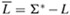

|
|
< Day Day Up > |
|
We begin our study of NP-completeness by formalizing our notion of polynomial-time solvable problems. These problems are generally regarded as tractable, but for philosophical, not mathematical, reasons. We can offer three supporting arguments.
First, although it is reasonable to regard a problem that requires time Θ(n100) as intractable, there are very few practical problems that require time on the order of such a high-degree polynomial. The polynomial-time computable problems encountered in practice typically require much less time. Experience has shown that once a polynomial-time algorithm for a problem is discovered, more efficient algorithms often follow. Even if the current best algorithm for a problem has a running time of Θ(n100), it is likely that an algorithm with a much better running time will soon be discovered.
Second, for many reasonable models of computation, a problem that can be solved in polynomial time in one model can be solved in polynomial time in another. For example, the class of problems solvable in polynomial time by the serial random-access machine used throughout most of this book is the same as the class of problems solvable in polynomial time on abstract Turing machines.[1] It is also the same as the class of problems solvable in polynomial time on a parallel computer when the number of processors grows polynomially with the input size.
Third, the class of polynomial-time solvable problems has nice closure properties, since polynomials are closed under addition, multiplication, and composition. For example, if the output of one polynomial-time algorithm is fed into the input of another, the composite algorithm is polynomial. If an otherwise polynomial-time algorithm makes a constant number of calls to polynomial-time subroutines, the running time of the composite algorithm is polynomial.
To understand the class of polynomial-time solvable problems, we must first have a formal notion of what a "problem" is. We define an abstract problem Q to be a binary relation on a set I of problem instances and a set S of problem solutions. For example, an instance for SHORTEST-PATH is a triple consisting of a graph and two vertices. A solution is a sequence of vertices in the graph, with perhaps the empty sequence denoting that no path exists. The problem SHORTEST-PATH itself is the relation that associates each instance of a graph and two vertices with a shortest path in the graph that connects the two vertices. Since shortest paths are not necessarily unique, a given problem instance may have more than one solution.
This formulation of an abstract problem is more general than is required for our purposes. As we saw above, the theory of NP-completeness restricts attention to decision problems: those having a yes/no solution. In this case, we can view an abstract decision problem as a function that maps the instance set I to the solution set {0, 1}. For example, a decision problem related to SHORTEST-PATH is the problem PATH that we saw earlier. If i = 〈G, u, v, k〉 is an instance of the decision problem PATH, then PATH(i) = 1 (yes) if a shortest path from u to v has at most k edges, and PATH(i) = 0 (no) otherwise. Many abstract problems are not decision problems, but rather optimization problems, in which some value must be minimized or maximized. As we saw above, however, it is usually a simple matter to recast an optimization problem as a decision problem that is no harder.
If a computer program is to solve an abstract problem, problem instances must be represented in a way that the program understands. An encoding of a set S of abstract objects is a mapping e from S to the set of binary strings.[2] For example, we are all familiar with encoding the natural numbers N = {0, 1, 2, 3, 4,...} as the strings {0, 1, 10, 11, 100,...}. Using this encoding, e(17) = 10001. Anyone who has looked at computer representations of keyboard characters is familiar with either the ASCII or EBCDIC codes. In the ASCII code, the encoding of A is 1000001. Even a compound object can be encoded as a binary string by combining the representations of its constituent parts. Polygons, graphs, functions, ordered pairs, programs-all can be encoded as binary strings.
Thus, a computer algorithm that "solves" some abstract decision problem actually takes an encoding of a problem instance as input. We call a problem whose instance set is the set of binary strings a concrete problem. We say that an algorithm solves a concrete problem in time O(T (n)) if, when it is provided a problem instance i of length n = |i|, the algorithm can produce the solution in O(T (n)) time.[3] A concrete problem is polynomial-time solvable, therefore, if there exists an algorithm to solve it in time O(nk) for some constant k.
We can now formally define the complexity class P as the set of concrete decision problems that are polynomial-time solvable.
We can use encodings to map abstract problems to concrete problems. Given an abstract decision problem Q mapping an instance set I to {0, 1}, an encoding e : I → {0, 1}* can be used to induce a related concrete decision problem, which we denote by e(Q).[4] If the solution to an abstract-problem instance i ∈ I is Q(i) ∈ {0, 1}, then the solution to the concrete-problem instance e(i) ∈ {0, 1}* is also Q(i). As a technicality, there may be some binary strings that represent no meaningful abstract-problem instance. For convenience, we shall assume that any such string is mapped arbitrarily to 0. Thus, the concrete problem produces the same solutions as the abstract problem on binary-string instances that represent the encodings of abstract-problem instances.
We would like to extend the definition of polynomial-time solvability from concrete problems to abstract problems by using encodings as the bridge, but we would like the definition to be independent of any particular encoding. That is, the efficiency of solving a problem should not depend on how the problem is encoded. Unfortunately, it depends quite heavily on the encoding. For example, suppose that an integer k is to be provided as the sole input to an algorithm, and suppose that the running time of the algorithm is Θ(k). If the integer k is provided in unary-a string of k 1's-then the running time of the algorithm is O(n) on length-n inputs, which is polynomial time. If we use the more natural binary representation of the integer k, however, then the input length is n = ⌊lg k⌋ + 1. In this case, the running time of the algorithm is Θ (k) = Θ(2n), which is exponential in the size of the input. Thus, depending on the encoding, the algorithm runs in either polynomial or superpolynomial time.
The encoding of an abstract problem is therefore quite important to our under-standing of polynomial time. We cannot really talk about solving an abstract problem without first specifying an encoding. Nevertheless, in practice, if we rule out "expensive" encodings such as unary ones, the actual encoding of a problem makes little difference to whether the problem can be solved in polynomial time. For example, representing integers in base 3 instead of binary has no effect on whether a problem is solvable in polynomial time, since an integer represented in base 3 can be converted to an integer represented in base 2 in polynomial time.
We say that a function f : {0, 1}* → {0,1}* is polynomial-time computable if there exists a polynomial-time algorithm A that, given any input x ∈ {0, 1}*, produces as output f (x). For some set I of problem instances, we say that two encodings e1 and e2 are polynomially related if there exist two polynomial-time computable functions f12 and f21 such that for any i ∈ I , we have f12(e1(i)) = e2(i) and f21(e2(i)) = e1(i).[5] That is, the encoding e2(i) can be computed from the encoding e1(i) by a polynomial-time algorithm, and vice versa. If two encodings e1 and e2 of an abstract problem are polynomially related, whether the problem is polynomial-time solvable or not is independent of which encoding we use, as the following lemma shows.
Let Q be an abstract decision problem on an instance set I , and let e1 and e2 be polynomially related encodings on I . Then, e1(Q) ∈ P if and only if e2(Q) ∈ P.
Proof We need only prove the forward direction, since the backward direction is symmetric. Suppose, therefore, that e1(Q) can be solved in time O(nk) for some constant k. Further, suppose that for any problem instance i, the encoding e1(i) can be computed from the encoding e2(i) in time O(nc) for some constant c, where n = |e2(i)|. To solve problem e2(Q), on input e2(i), we first compute e1(i) and then run the algorithm for e1(Q) on e1(i). How long does this take? The conversion of encodings takes time O(nc), and therefore |e1(i)| = O(nc), since the output of a serial computer cannot be longer than its running time. Solving the problem on e1(i) takes time O(|e1(i)|k) = O(nck), which is polynomial since both c and k are constants.
Thus, whether an abstract problem has its instances encoded in binary or base 3 does not affect its "complexity," that is, whether it is polynomial-time solvable or not, but if instances are encoded in unary, its complexity may change. In order to be able to converse in an encoding-independent fashion, we shall generally assume that problem instances are encoded in any reasonable, concise fashion, unless we specifically say otherwise. To be precise, we shall assume that the encoding of an integer is polynomially related to its binary representation, and that the encoding of a finite set is polynomially related to its encoding as a list of its elements, enclosed in braces and separated by commas. (ASCII is one such encoding scheme.) With such a "standard" encoding in hand, we can derive reasonable encodings of other mathematical objects, such as tuples, graphs, and formulas. To denote the standard encoding of an object, we shall enclose the object in angle braces. Thus, 〈G〉 denotes the standard encoding of a graph G.
As long as we implicitly use an encoding that is polynomially related to this standard encoding, we can talk directly about abstract problems without reference to any particular encoding, knowing that the choice of encoding has no effect on whether the abstract problem is polynomial-time solvable. Henceforth, we shall generally assume that all problem instances are binary strings encoded using the standard encoding, unless we explicitly specify the contrary. We shall also typically neglect the distinction between abstract and concrete problems. The reader should watch out for problems that arise in practice, however, in which a standard encoding is not obvious and the encoding does make a difference.
One of the convenient aspects of focusing on decision problems is that they make it easy to use the machinery of formal-language theory. It is worthwhile at this point to review some definitions from that theory. An alphabet Σ is a finite set of symbols. A language L over Σ is any set of strings made up of symbols from Σ. For example, if Σ = {0, 1}, the set L = {10, 11, 101, 111, 1011, 1101, 10001,...} is the language of binary representations of prime numbers. We denote the empty string by ε, and the empty language by Ø. The language of all strings over Σ is denoted Σ*. For example, if Σ = {0, 1}, then Σ* = {ε, 0, 1, 00, 01, 10, 11, 000,...} is the set of all binary strings. Every language L over Σ is a subset of Σ*.
There are a variety of operations on languages. Set-theoretic operations, such as union and intersection, follow directly from the set-theoretic definitions. We define the complement of L by . The concatenation of two languages L1 and L2 is the language
L = {x1x2 : x1 ∈ L1 and x2 ∈ L2}.
The closure or Kleene star of a language L is the language
L*= {ε} ∪ L ∪ L2 ∪ L3 ∪ ···,
where Lk is the language obtained by concatenating L to itself k times.
From the point of view of language theory, the set of instances for any decision problem Q is simply the set Σ*, where Σ = {0, 1}. Since Q is entirely characterized by those problem instances that produce a 1 (yes) answer, we can view Q as a language L over Σ = {0, 1}, where
L = {x ∈ Σ*: Q(x) = 1}.
For example, the decision problem PATH has the corresponding language
PATH = {〈G, u, v, k〉 : G = (V, E) is an undirected graph, u, v ∈ V, k ≥ 0 is an integer, and there exists a path from u to v in G consisting of at most k edges}.
(Where convenient, we shall sometimes use the same name-PATH in this case- to refer to both a decision problem and its corresponding language.)
The formal-language framework allows us to express the relation between decision problems and algorithms that solve them concisely. We say that an algorithm A accepts a string x ∈ {0, 1}* if, given input x, the algorithm's output A(x) is 1. The language accepted by an algorithm A is the set of strings L = {x ∈ {0, 1}*: A(x) = 1}, that is, the set of strings that the algorithm accepts. An algorithm A rejects a string x if A(x) = 0.
Even if language L is accepted by an algorithm A, the algorithm will not necessarily reject a string x ∉ L provided as input to it. For example, the algorithm may loop forever. A language L is decided by an algorithm A if every binary string in L is accepted by A and every binary string not in L is rejected by A. A language L is accepted in polynomial time by an algorithm A if it is accepted by A and if in addition there is a constant k such that for any length-n string x ∈ L, algorithm A accepts x in time O(nk). A language L is decided in polynomial time by an algorithm A if there is a constant k such that for any length-n string x ∈ {0, 1}*, the algorithm correctly decides whether x ∈ L in time O(nk). Thus, to accept a language, an algorithm need only worry about strings in L, but to decide a language, it must correctly accept or reject every string in {0, 1}*.
As an example, the language PATH can be accepted in polynomial time. One polynomial-time accepting algorithm verifies that G encodes an undirected graph, verifies that u and v are vertices in G, uses breadth-first search to compute the shortest path from u to v in G, and then compares the number of edges on the shortest path obtained with k. If G encodes an undirected graph and the path from u to v has at most k edges, the algorithm outputs 1 and halts. Otherwise, the algorithm runs forever. This algorithm does not decide PATH, however, since it does not explicitly output 0 for instances in which the shortest path has more than k edges. A decision algorithm for PATH must explicitly reject binary strings that do not belong to PATH. For a decision problem such as PATH, such a decision algorithm is easy to design: instead of running forever when there is not a path from u to v with at most k edges, it outputs 0 and halts. For other problems, such as Turing's Halting Problem, there exists an accepting algorithm, but no decision algorithm exists.
We can informally define a complexity class as a set of languages, membership in which is determined by a complexity measure, such as running time, of an algorithm that determines whether a given string x belongs to language L. The actual definition of a complexity class is somewhat more technical-the interested reader is referred to the seminal paper by Hartmanis and Stearns [140].
Using this language-theoretic framework, we can provide an alternative definition of the complexity class P:
P = {L ⊆ {0, 1}* : there exists an algorithm A that decides L in polynomial time} .
In fact, P is also the class of languages that can be accepted in polynomial time.
P = {L : L is accepted by a polynomial-time algorithm}.
Proof Since the class of languages decided by polynomial-time algorithms is a subset of the class of languages accepted by polynomial-time algorithms, we need only show that if L is accepted by a polynomial-time algorithm, it is decided by a polynomial-time algorithm. Let L be the language accepted by some polynomial-time algorithm A. We shall use a classic "simulation" argument to construct another polynomial-time algorithm A′ that decides L. Because A accepts L in time O(nk) for some constant k, there also exists a constant c such that A accepts L in at most T = cnk steps. For any input string x, the algorithm A′ simulates the action of A for time T. At the end of time T, algorithm A′ inspects the behavior of A. If A has accepted x, then A′ accepts x by outputting a 1. If A has not accepted x, then A′ rejects x by outputting a 0. The overhead of A′ simulating A does not increase the running time by more than a polynomial factor, and thus A′ is a polynomial-time algorithm that decides L.
Note that the proof of Theorem 34.2 is nonconstructive. For a given language L ∈ P, we may not actually know a bound on the running time for the algorithm A that accepts L. Nevertheless, we know that such a bound exists, and therefore, that an algorithm A′ exists that can check the bound, even though we may not be able to find the algorithm A′ easily.
Define the optimization problem LONGEST-PATH-LENGTH as the relation that associates each instance of an undirected graph and two vertices with the number of edges in the longest simple path between the two vertices. Define the decision problem LONGEST-PATH = {〈G, u, v, k〉 : G = (V, E) is an undirected graph, u, v ∈ V , k ≥ 0 is an integer, and there exists a simple path from u to v in G consisting of at least k edges}. Show that the optimization problem LONGEST-PATH-LENGTH can be solved in polynomial time if and only if LONGEST-PATH ∈ P.
Give a formal definition for the problem of finding the longest simple cycle in an undirected graph. Give a related decision problem. Give the language corresponding to the decision problem.
Give a formal encoding of directed graphs as binary strings using an adjacency-matrix representation. Do the same using an adjacency-list representation. Argue that the two representations are polynomially related.
Is the dynamic-programming algorithm for the 0-1 knapsack problem that is asked for in Exercise 16.2-2 a polynomial-time algorithm? Explain your answer.
Show that an otherwise polynomial-time algorithm that makes at most a constant number of calls to polynomial-time subroutines runs in polynomial time, but that a polynomial number of calls to polynomial-time subroutines may result in an exponential-time algorithm.
[1]See Hopcroft and Ullman [156] or Lewis and Papadimitriou [204] for a thorough treatment of the Turing-machine model.
[2]The codomain of e need not be binary strings; any set of strings over a finite alphabet having at least 2 symbols will do.
[3]We assume that the algorithm's output is separate from its input. Because it takes at least one time step to produce each bit of the output and there are O(T (n)) time steps, the size of the output is O(T (n)).
[4]As we shall see shortly, {0, 1}* denotes the set of all strings composed of symbols from the set {0, 1}.
[5]Technically, we also require the functions f12 and f21 to "map noninstances to noninstances." A noninstance of an encoding e is a string x ∈ {0, 1}* such that there is no instance i for which e(i) = x. We require that f12(x) = y for every noninstance x of encoding e1, where y is some noninstance of e2, and that f21(x′) = y′ for every noninstance x′ of e2, where y′ is some noninstance of e1.
|
|
< Day Day Up > |
|